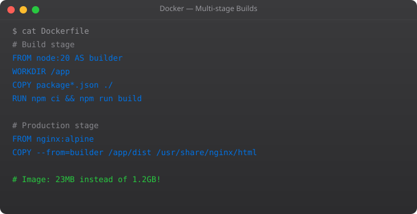

Security is not optional in production Docker deployments. A misconfigured container can give an attacker a foothold into your entire infrastructure. The good news is that Docker security best practices are not complicated — most of them are just a few lines in your Dockerfile or a few flags on docker run.
FROM node:20-alpine
WORKDIR /app
COPY package*.json ./
RUN npm ci --only=production
COPY . .
# Create non-root user
RUN addgroup -S appgroup && adduser -S appuser -G appgroup
# Change ownership of app files
RUN chown -R appuser:appgroup /app
# Switch to non-root user
USER appuser
EXPOSE 3000
CMD ["node", "index.js"]# Instead of:
FROM ubuntu:22.04 # 77MB, lots of attack surface
# Use:
FROM debian:bookworm-slim # 74MB but fewer extras
FROM node:20-alpine # 45MB with Alpine
FROM gcr.io/distroless/nodejs20 # Minimal, no shell# Install Trivy
curl -sfL https://raw.githubusercontent.com/aquasecurity/trivy/main/contrib/install.sh | sh
# Scan an image
trivy image my-app:latest
# Scan with CRITICAL/HIGH only
trivy image --severity CRITICAL,HIGH my-app:latest
# Scan in CI/CD (fail pipeline if CRITICAL found)
trivy image --exit-code 1 --severity CRITICAL my-app:latestdocker run --read-only --tmpfs /tmp --tmpfs /var/run my-app:latestdocker run --cap-drop ALL --cap-add NET_BIND_SERVICE --security-opt no-new-privileges my-app:latest# WRONG — secret in Dockerfile
ENV API_KEY=secretkey123
# WRONG — secret in build arg (visible in image history)
ARG API_KEY
ENV API_KEY=$API_KEY
# RIGHT — pass at runtime
docker run -e API_KEY=secretkey123 my-app
# BETTER — use Docker secrets or mount a secrets file
docker run -v /run/secrets/api_key:/run/secrets/api_key:ro my-appIn Part 10, we integrate Docker into CI/CD pipelines — automated building, testing, scanning, and deploying containers on every code push using GitHub Actions.
Docker Bench is an open-source tool that runs a checklist of security best practices against your Docker installation and running containers. Run it regularly as part of your security posture.
docker run --rm --net host --pid host --userns host --cap-add audit_control \
-e DOCKER_CONTENT_TRUST=$DOCKER_CONTENT_TRUST \
-v /etc:/etc:ro \
-v /lib/systemd/system:/lib/systemd/system:ro \
-v /usr/bin/containerd:/usr/bin/containerd:ro \
-v /usr/bin/runc:/usr/bin/runc:ro \
-v /usr/lib/systemd:/usr/lib/systemd:ro \
-v /var/lib:/var/lib:ro \
-v /var/run/docker.sock:/var/run/docker.sock:ro \
--label docker_bench_security \
docker/docker-bench-security# Only expose the minimum ports needed
# BAD — expose all ports
docker run -P nginx
# GOOD — expose only what is needed, on localhost only
docker run -p 127.0.0.1:8080:80 nginx
# Create separate networks for isolation
docker network create frontend-net
docker network create backend-net
# Web server: on frontend (accessible)
docker run -d --network frontend-net --name web my-web-app
# Database: on backend only (not accessible from outside)
docker run -d --network backend-net --name db postgres
# App server: on both networks (bridges them)
docker run -d --network frontend-net --name app my-api
docker network connect backend-net appdocker run \
--memory="512m" \ # Max 512MB RAM
--memory-swap="512m" \ # Same as memory = no swap
--cpus="1.0" \ # Max 1 CPU core
--pids-limit=100 \ # Max 100 processes (prevents fork bombs)
--ulimit nofile=1024:1024 \ # Limit open file descriptors
my-appSetting resource limits is both a security measure and a stability measure. Without limits, a buggy or compromised container can consume all host memory and crash every other container on the machine. Limits contain the blast radius of any failure to a single container.
Running as root inside a container means that if an attacker exploits a vulnerability in your application, they have root access to the container. On older Docker versions or with certain misconfigurations, this could escalate to root on the host. Running as a non-root user significantly limits the damage of a container compromise.
Use docker scout cves image-name (built into Docker CLI) or Trivy (free, open source) with trivy image my-app:latest. These tools check your image layers against known vulnerability databases and report CVEs by severity. Integrate scanning into your CI/CD pipeline to catch vulnerabilities before images reach production.
Use Docker secrets (in Swarm mode) or mount a secrets file at runtime. For Kubernetes, use Kubernetes Secrets. For development, use .env files that are git-ignored. Never hardcode secrets in Dockerfiles or store them in environment variables if the container might be compromised — environment variables are visible to any process inside the container.
Running a container with --read-only prevents any process inside from writing to the container filesystem. This stops malware from modifying binaries or writing malicious files. Applications that need to write can do so only to explicitly allowed tmpfs mounts or volumes. Use --read-only --tmpfs /tmp for applications that need temp file access.
Docker Content Trust (DCT) enables signing and verification of Docker images. When enabled (DOCKER_CONTENT_TRUST=1), Docker refuses to pull or run unsigned images. This prevents tampered images from running. It is particularly important in production environments where you want to guarantee that only images you signed and verified are deployed.